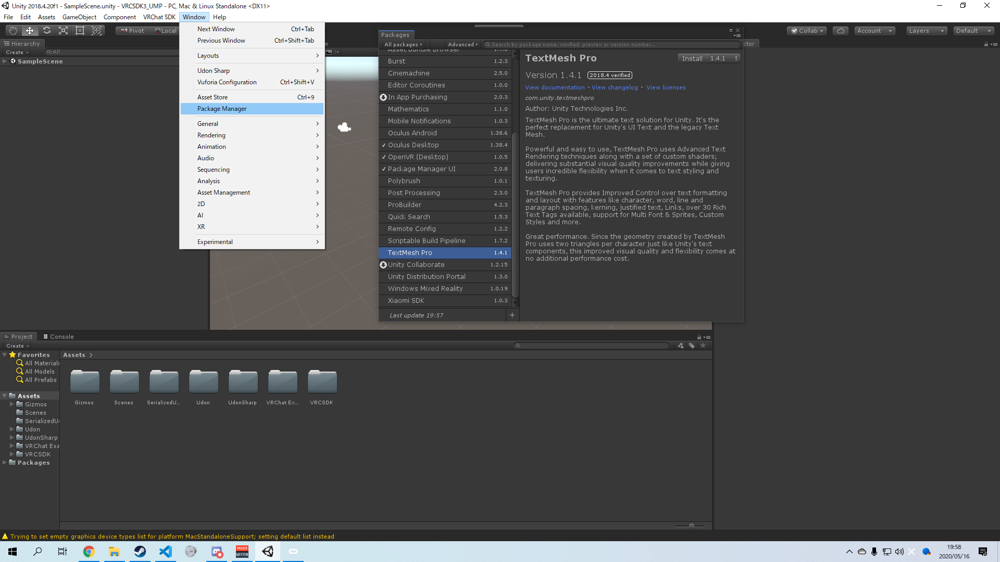
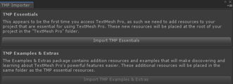

導入
依存パッケージのインポート
依存パッケージは次の通りです。
- VRCSDK3 + Udon
- Udon Sharp
- TextMeshPro
- Selected U3D Japanese Font
VRCSDK3
最新のパッケージをダウンロード後、ドラッグ&ドロップでインポートしてください。
Udon Sharp
最新のパッケージをダウンロード後、ドラッグ&ドロップでインポートしてください。
TextMeshPro
Unity2018から利用可能なテキスト表示アセットです。Window --> Package Manager --> TextMesh Pro --> Installで導入できます。

Selected U3D Japanese Font
日本語フォントです。Asset StoreでSelected U3D Japanese Fontと検索すればHitします。

UMP本体のインポート
ダウンロードしたUdonMediaPlayerをUnityにインポートしてください。

UdonMediaPlayer/Prefab/UdonMediaPlayer.prefabをHierarchyにドラッグ&ドロップしてください。
Tip
もし、画像のような表示が出た場合、1つ目(上段)のボタンはクリックしてください。2つ目(下段)はサンプルアセットです。導入はおまかせします。

その後、Hierarchyで任意のUdon Behaviourが含まれるオブジェクト(画像はUdonMediaPlayer/PlayerCountController)を選択します。
画面右側、InspectorのUdon Behaviour内、Compile All UdonSharp Programsをクリックしてください。
Tip
もし、VRCに持ち込んで音楽が再生されない場合、MusicPlayerUIをActive(Inspectorのチェックボックス)にしてからCompile All UdonSharp Programsをしてみてください。
 それでも動かない場合はご一報ください。@yukad2
それでも動かない場合はご一報ください。@yukad2
Summary
これで導入は終了です。お疲れ様でした。